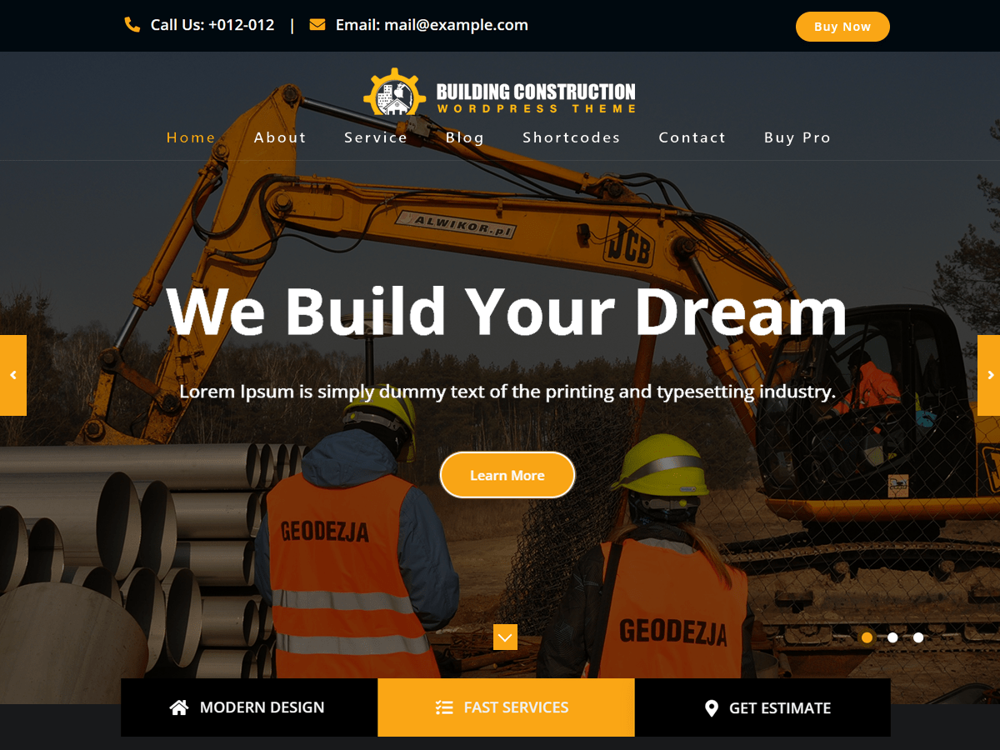
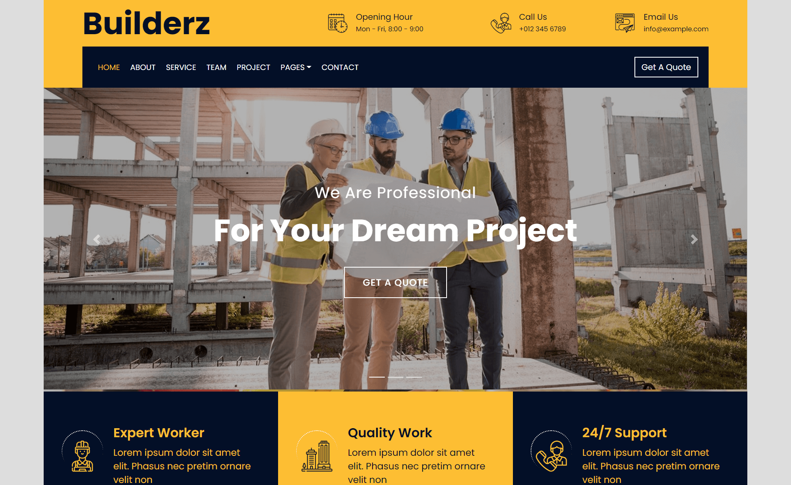

This website will be the main site to find information about the 4S Excavating Service. The primary purpose is to serve as advertising for the service and will contain information on contracting services or renting the excavators.
The client for this project is Donny Sousa, and his company 4S Solutions.
The main users for this site would be contractors and homeowners. While a desktop view would be important, a lot of these people will be accessing the site from a phone. Because of this we will prioritize making a professional and responsive mobile design.
The website will contain information on how to contact 4S in order to book services or rent excavators. There will be images of the excavators and completed jobs, to show what can be done with the services. The content will also emphasize that the services are only for small excavating work, as 4S does not currently have access to large excavators. The design will be made to be easily expandable when new machines are bought and new services are provided.
The design is relatively free, but the site should look professional and incorporate the company logo. Some examples of professional looking sites provided by the client can be found below.
 The site doesn't need a lot of data to be stored by the backend, but there are some features that could be nice to have. One feature that might use external data is a calendar to show when different machines are available to be rented, and when they are in use. There could also be different rental rates for each machine stored in a database.
One interactive element that would be nice would be an interactive calendar as mentioned above in the data section. Another useful element would be embedding facebook posts to view them in the site.